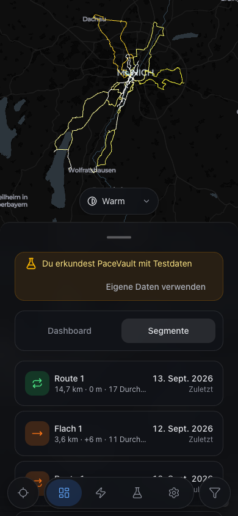

R1Segments tab: header line removed
The "36 segments · last ridden first" line is gone; a small "Updating after your last import" caption shows only while a stale list is up.
apps/web/src/components/segments/SegmentsTab.tsx:23;
apps/web/src/components/segments/SegmentsUpdatingNote.tsx:5;
packages/i18n/messages/en.json:788.
Desktop · 1280 × 800 · Segments tabdrag to compare
 BeforeAfter
BeforeAfter
Phone · 390 × 844 · DE

